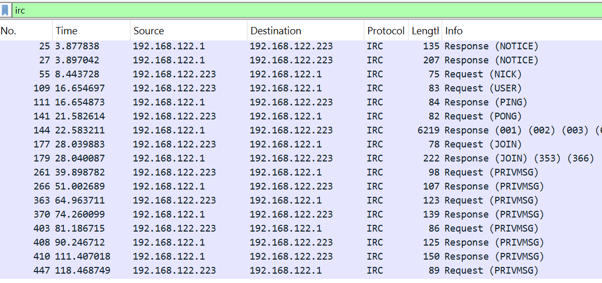
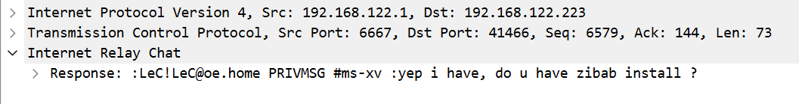
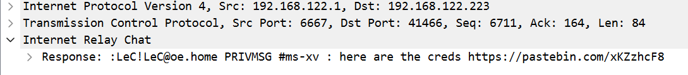
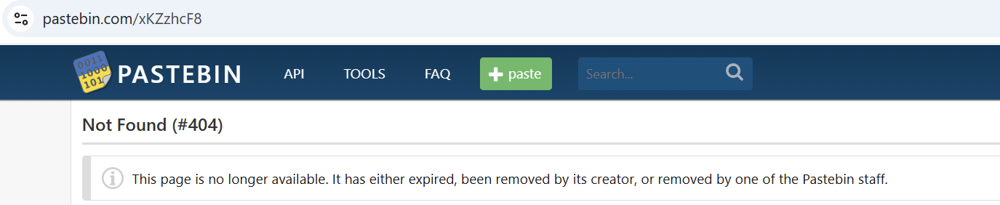
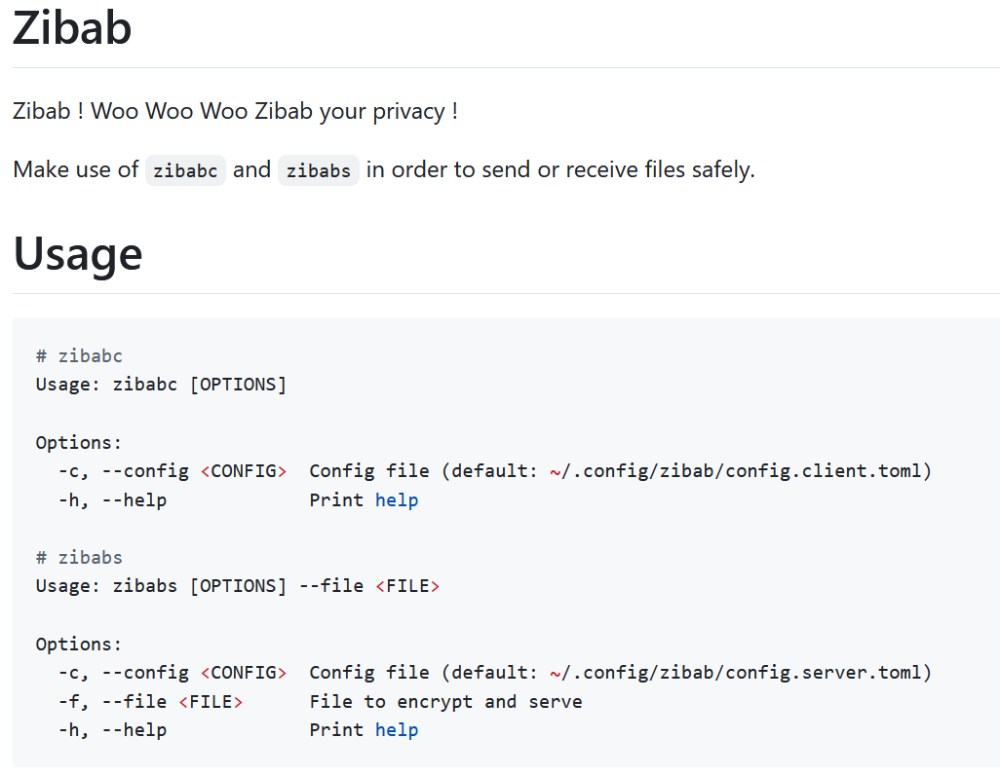
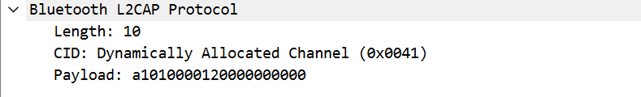
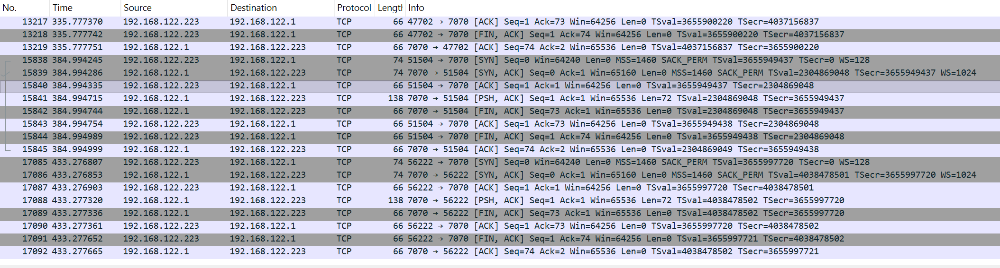
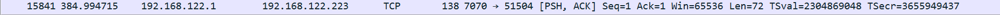
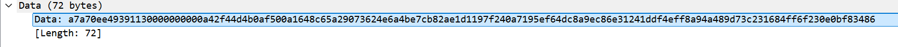

A .pcapng file with a hardware category label. The instinct is to look for USB,
Bluetooth, or serial traffic rather than classic network exploitation. This challenge hides
its real attack surface inside a merged capture containing both ordinary IRC network traffic
and a Bluetooth keyboard snoop file.
The network side is deliberately designed to distract: IRC messages reference a secret file
transfer tool called zibab and drop a Pastebin link promising credentials.
That Pastebin is empty and is a dead end. The actual secret material is typed live on a Bluetooth
keyboard and leaked through the HID reports in the second half of the capture.
You can download and try the challenge using the capture.pcapng file available
on the right hand side.
.pcap,
it supports multiple interfaces and custom metadata blocks, which allows merging captures
from different sources into a single file.
Bluetooth HID: Human Interface Device profile over Bluetooth. A keyboard sends one HID input report per key event containing a modifier byte and up to six keycodes, identical in structure to wired USB HID reports.
AES-256-GCM: Authenticated encryption scheme. Takes a 256-bit key and a 12-byte nonce; produces ciphertext and a 16-byte authentication tag appended at the end.
L2CAP: Logical Link Control and Adaptation Protocol is the Bluetooth layer responsible for carrying higher-level protocols over logical channels. In this capture, the HID keyboard reports are transported over a L2CAP channel
Before opening Wireshark, we want to run strings on the file to reveals
any metadata items that might be relevant, here that immediately tells us what approach we should go for:
strings capture.pcapng | grep -i "File"
$ bash inspect.sh File created by merging: File1: bt_keyboard.snoop File2: net_traffic.pcap
The capture is a merge of two sources: a Bluetooth keyboard snoop and a standard network capture. This immediately gives us two independent directions to investigate and confirms that the hardware component of this challenge is the Bluetooth keyboard traffic.
We then fire up Wireshark and scroll through this very big network capture. Nothing stands out to much here...
After doomscroling this capture for a few minutes, we decide to start using display filters and start filtering
on tcp, http, irc and bluetooth. This first reveals an intresting IRC conversation on the
network side of the capture. The messages establish a story with two users, one being 192.168.122.223 talking
to the server on 192.168.122.1 probably redirecting trafic to another user hidden from this capture.
They have a chat around a tool called zibab and drop what looks like a credential link:



Because love rabit holes :(, we follow the Pastebin link that leads nowhere (the page returns a 404):

This maps neatly to the file structure found earlier:
net_traffic.pcap carries the story, initial information and a bait.
We assume that bt_keyboard.snoop carries the real secret, but this
zibab tool is also the name of the challenge so it is not here randomly.
The IRC conversation names the tool explicitly. A quick search (it took me to long to find to admit) finds the public
GitHub Tool repo.
zibab ships two binaries: zibabc (client) and zibabs (server).
It transfers files over TCP using AES-256-GCM encryption, defaulting to port 7070.
The client config lives at ~/.config/zibab/config.client.toml and exposes
the crypto fields that drive key derivation:

Using the example example/client.config.toml in the github repository,
we can reconstruct the structure and consider the missing fields:
[crypto] algorithm = "aes-256-gcm" kdf = "sha256" key_hint = "derived" nonce_strategy = "iv_prefix_padded" salt_hex = "" pepper_hex = "" iv_prefix_hex = ""
The key derivation concatenates the three string values and hashes them with SHA-256:
SHA256(salt_hex + pepper_hex + iv_prefix_hex). Only iv_prefix_hex
is hex-decoded when building the nonce; the other two are used as plain strings.
Recovering these three values from the keyboard capture is the core of the challenge.
Looking at the actual Rust source confirms exactly how the key and nonce are derived:
pub fn derive_key(cfg: &CryptoConfig) -> Result<[u8; 32]> { let key_material = format!("{}{}{}", cfg.salt_hex, cfg.pepper_hex, cfg.iv_prefix_hex); let mut hasher = Sha256::new(); hasher.update(key_material.as_bytes()); Ok(hasher.finalize().into()) }
pub fn derive_nonce(cfg: &CryptoConfig) -> Result<[u8; 12]> { let iv_raw = hex::decode(&cfg.iv_prefix_hex)?; ... }
Ok now we know there exists a zibab tool, what it takes as input and that it can be used to decrypt the cyphertext, we now need to find our key components.
The generic bluetooth filter confirms that the capture contains Bluetooth traffic, but it is noisy and includes a lot of unrelated Bluetooth framing and control packets.
To recover keystrokes, we only need the L2CAP channel carrying HID interrupt reports.
In this capture, that channel is 0x0041, so filtering on btl2cap.cid == 0x0041 isolates the Bluetooth keyboard input reports.
The filter that isolates the relevant packets is:
btl2cap.cid == 0x0041
Each HID input report has a fixed structure identical to USB HID keyboard reports:
a1 01 ← HID input report header 00 ← modifier byte (0x00 = No Shift) 00 ← reserved byte 12 ← keycode (0x12 = 'o') 00 00 00 00 00 ← remaining key slots (up to 6 total)

We write a Python script that extracts all HID reports from the capture and maps each keycode to its character using the HID keyboard usage table. It is worth noting that the key maping is AZERTY / French Keyboard. The key point is to only process new key presses and comparing each report against the previous one, otherwise held keys get duplicated. We also want to interpret backspaces and ignore arrow keys and empty input before printing the results
import pyshark BASE = { 4:"a", 5:"b", 6:"c", 7:"d", 8:"e", 9:"f", 10:"g", 11:"h", 12:"i", 13:"j", 14:"k", 15:"l", 16:"m", 17:"n", 18:"o", 19:"p", 20:"q", 21:"r", 22:"s", 23:"t", 24:"u", 25:"v", 26:"w", 27:"x", 28:"y", 29:"z", 30:"1", 31:"2", 32:"3", 33:"4", 34:"5", 35:"6", 36:"7", 37:"8", 38:"9", 39:"0", 40:"\n", 41:"[ESC]", 42:"[BKSP]", 43:"[TAB]", 44:" ", 45:"-", 46:"+", 47:"{", 48:"}", 49:"|", 51:":", 52:'"', 53:"~", 54:"<", 55:".", 56:"/", 57:"[CAPSLOCK]", 79:"[RIGHT]", 80:"[LEFT]", 81:"[DOWN]", 82:"[UP]", 100:"\" } SHIFT = { 4:"A", 5:"B", 6:"C", 7:"D", 8:"E", 9:"F", 10:"G", 11:"H", 12:"I", 13:"J", 14:"K", 15:"L", 16:"M", 17:"N", 18:"O", 19:"P", 20:"Q", 21:"R", 22:"S", 23:"T", 24:"U", 25:"V", 26:"W", 27:"X", 28:"Y", 29:"Z", 30:"!", 31:"@", 32:"#", 33:"$", 34:"%", 35:"^", 36:"&", 37:"*", 38:"(", 39:")", 40:"\n", 41:"[ESC]", 42:"[BKSP]", 43:"[TAB]", 44:" ", 45:"-", 46:"+", 47:"{", 48:"}", 49:"|", 51:":", 52:'"', 53:"~", 54:"<", 55:".", 56:"/", 57:"[CAPSLOCK]", 79:"[RIGHT]", 80:"[LEFT]", 81:"[DOWN]", 82:"[UP]", 100:"\" } IGNORE = {57, 79, 80, 81, 82} cap = pyshark.FileCapture("capture.pcapng", display_filter="btl2cap.cid == 0x0041") prev = [0] * 6 output = [] for pkt in cap: try: raw = bytes.fromhex(str(pkt.btl2cap.payload).replace(":", "")) if raw[0] != 0xa1 or raw[1] != 0x01: continue mod = raw[2] keys = list(raw[4:10]) shift = mod in (0x02, 0x20) table = SHIFT if shift else BASE for k in keys: if k==0 or k in IGNORE: continue if k not in prev: token = table.get(k, f"[{k}]") if token == "[BKSP]": if output: output.pop() else: output.append(token) prev = keys except: pass print("".join(output))
The decoded keyboard stream is not pasted directly into the write-up because it contains
tab completion, directory movement and Vim motions but my writeup code is provided on the right
as HW_AuvergnHack2026.py. After interpreting those edits,
the meaningful sequence is:
$ python decode_hid.py cd zibab git pull nvim .config/zibab/cli/config.client.toml /iv_prefix ci"a7a70ee4939113 kk ci"OhlalaTeteDeSaMerePtn j ci"NoooonTapePasDansLeMurGrooos nvim ~/.config/zibab/cli/config.client.toml /Dans ciwContre :wq nvim ~/.config/zibab/cli/config.client.toml /Groo llio :wq
The decoded keystrokes show the user opening the zibab client config in
Vim and editing the three crypto fields. Reading the Vim commands in sequence:
iv_prefix_hex/iv_prefix jumps to that line.
ci"a7a70ee4939113 replaces the quoted value and exits insert mode
Result:
iv_prefix_hex = "a7a70ee4939113"
salt_hexkk moves the cursor two lines up to salt_hex.
ci"OhlalaTeteDeSaMerePtn sets the value and exits insert mode.
Result:
salt_hex = "OhlalaTeteDeSaMerePtn"
pepper_hexj moves down one line to pepper_hex.
ci"NoooonTapePasDansLeMurGrooos sets the initial value and exits insert mode.
Then later, the user corrects a typo:
Dans → Contre and adds an
extra o to Groo (and exits insert mode...).
Final result:
pepper_hex = "NoooonTapePasContreLeMurGroooos"
Using the Github Repository default config structure we get the final recovered client crypto config as:
[crypto] algorithm = "aes-256-gcm" kdf = "sha256" key_hint = "derived" nonce_strategy = "iv_prefix_padded" salt_hex = "OhlalaTeteDeSaMerePtn" pepper_hex = "NoooonTapePasContreLeMurGroooos" iv_prefix_hex = "a7a70ee4939113"
_hex field names, salt_hex and pepper_hex
are plain ASCII strings. The zibab source only hex-decodes
iv_prefix_hex when building the nonce, the other two are concatenated as-is.
With the config recovered, the network side of the capture becomes useful again.
zibabc (the client) connects to the server on TCP port 7070 (as shown in the example config of the repo)
and the server transmits the encrypted payload as a single stream: the first 12 bytes are
the nonce, the rest is ciphertext + GCM authentication tag.
stream.read_to_end(&mut buf).await?; if buf.len() < 12 { anyhow::bail!("payload too short"); } let nonce_bytes: [u8; 12] = buf[..12].try_into()?; let ciphertext = &buf[12..]; let plaintext = crypto::decrypt_with_nonce(&cfg.crypto, &nonce_bytes, ciphertext)?;
The above code snippet from client.rs is how we understood
that the payload was divided into a nonce of 12 bytes
and the rest as cyphertext.



The payload splits as follows, and the nonce prefix matches the recovered
iv_prefix_hex padded to 12 bytes with zeroes:
nonce (12 bytes): a7a70ee49391130000000000 ciphertext + tag (60 bytes): a42f44d4b0af500a1648c65a29073624e6a4be7cb82ae1d1 197f240a7195ef64dc8a9ec86e31241ddf4eff8a94a489d7 3c231684ff6f230e0bf83486
There is no need to run the zibab binaries. We replicate the key derivation
and decrypt offline in Python using sha256:
from hashlib import sha256 from cryptography.hazmat.primitives.ciphers.aead import AESGCM salt_hex = "OhlalaTeteDeSaMerePtn" pepper_hex = "NoooonTapePasContreLeMurGroooos" iv_prefix_hex = "a7a70ee4939113" payload = bytes.fromhex( "a7a70ee49391130000000000" "a42f44d4b0af500a1648c65a29073624e6a4be7cb82ae1d1" "197f240a7195ef64dc8a9ec86e31241ddf4eff8a94a489d7" "3c231684ff6f230e0bf83486" ) nonce = payload[:12] ciphertext = payload[12:] key_material = (salt_hex + pepper_hex + iv_prefix_hex).encode() key = sha256(key_material).digest() plaintext = AESGCM(key).decrypt(nonce, ciphertext, None) print(plaintext.decode())
$ python decrypt.py ZiTF{Fra1seFr4mbo1seMyrt1ll3OnVaB1enMang3r}
This challenge combines two attack surfaces in one file. The network side provides context with IRC communications,
a deliberate decoy and the important port 7070 captures with the payload to decrypt.
This is esential to find out about the zibab tool on github.
The hardware side with Bluetooth HID, holds the actual secret hidden within key presses.
Recognising the merged capture structure from the strings output is the
pivotal insight that prevents hours wasted chasing a dead Pastebin link.
Once the right channel is identified, the decode path is straightforward: extract HID
reports from L2CAP channel 0x0041, replay the keystrokes, reconstruct the
Vim editing session to recover the TOML config values, don't get fooled by the last minute changes,
then replicate the SHA256(salt + pepper + iv_prefix) key derivation to decrypt the TCP payload offline.
.pcapng file does not necessarily mean network
exploitation. Always run strings first and check for merged captures,
unusual L2CAP channels, or HID traffic. A challenge category is a hint, not a constraint
and you should always consider other attack angles (a bit of OSINT here).
Bluetooth keyboards leak every keystroke,
including passwords typed into config files, all that unencrypted...